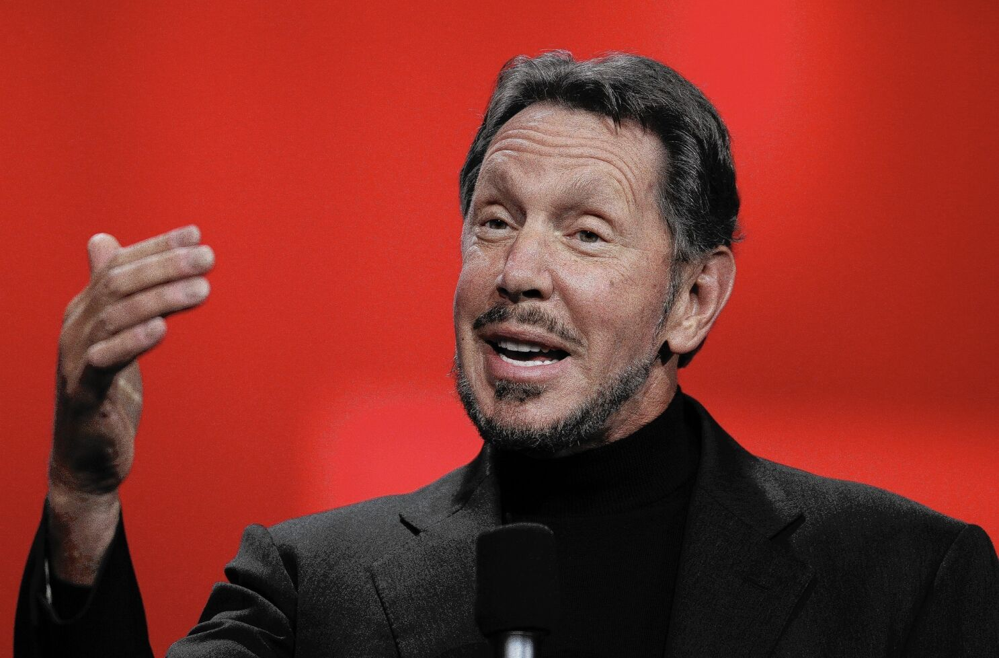

"I have had all the disadvantages required for success."
"The only way to get ahead is to find errors in conventional wisdom."
"The most important aspect of my personality as far as determining my success goes has been my questioning conventional wisdom, doubting experts, and questioning authority."
"When you innovate, you've got to be prepared for everyone telling you you're nuts."
"I believe people have to follow their dreams. I did."
"The only way to get ahead in business is to give yourself a permission slip to think differently, to go against the conventional wisdom."
"When I started Oracle, what I wanted to do was to create an environment where I would enjoy working. That was my primary goal. Sure, I wanted to make a living. I certainly never expected to become rich, certainly not this rich. I mean, rich does not even describe this. This is surreal."
"I'm addicted to winning. The more you win, the more you want to win."
"You have to act and act now."
"The only thing I really, really enjoy is sailing."
"The most important thing for me is that we deliver winning products. I don't care if people don't like me. I don't care if people throw rocks at me. Just as long as we win."
"Well, I think we are a very, very successful company. We have created enormous shareholder value. We have created enormous wealth for our employees."
"I have had all the disadvantages required for success."
"When you're the first person whose beliefs are different from what everyone else believes, you're basically saying, 'I'm right, and everyone else is wrong.'"